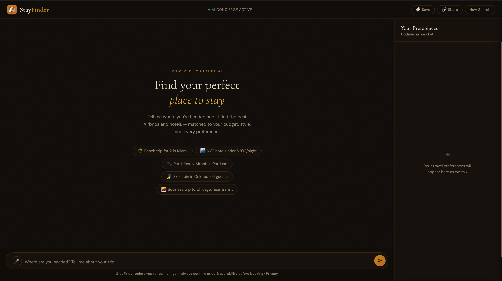
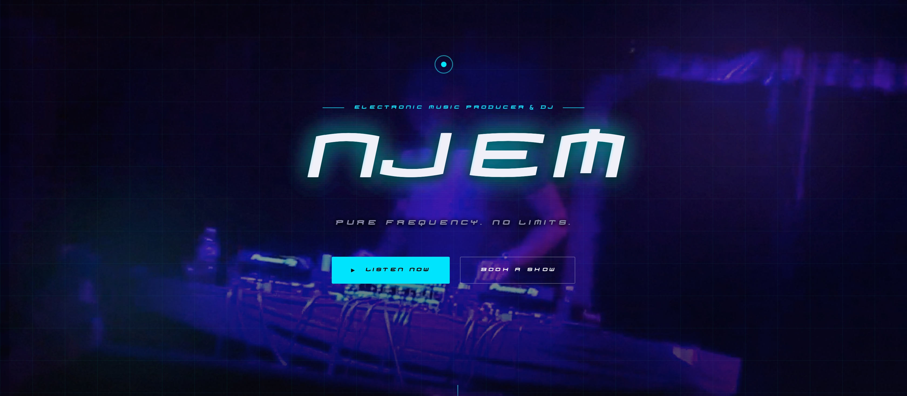
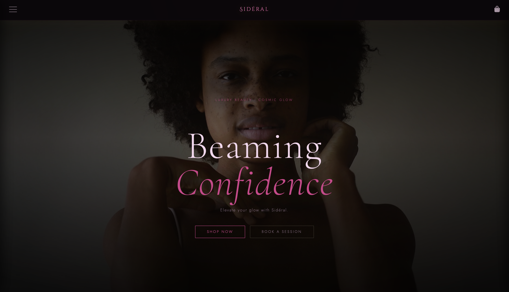
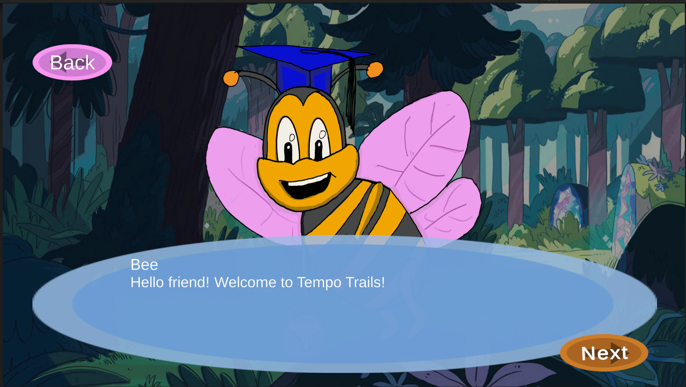

Noah C. Jones
UX / Product Design & Design Engineering
4+
shipped & live products
5–8
age range usability tested
WCAG
AA/AAA design standard
B.S.
Computer Science, LSU
Selected Work
Four projects spanning accessibility-first game design, a live AI product, a client brand site, and a full e-commerce build — each taken from research through shipped product.

AI Product · Live
A conversational travel concierge that replaces filter fatigue with a chat interface — deployed and used today, not a mockup.

Client Website · Live
A one-scroll artist site and digital EPK — research through launch shipped in five weeks for a real client.

Brand Website · Live
A luxury beauty brand built from scratch — full storefront, cart, and booking system, no framework.

Accessibility · Game Design
A rhythm-based Unity game designed for autistic children ages 5–8 — accessibility as the foundation, not a feature.
How I Work
01
Client interviews, competitor analysis, and — where it matters most — direct usability testing with the actual people who'll use the product, including children as young as five.
02
WCAG 2.1 AA/AAA isn't a checklist I run at the end — it's a constraint I design inside from the first wireframe. Products that work at the edges work better for everyone.
03
Figma component libraries, design tokens, and modular front-end architecture, so design and code stay in sync as a product grows past the first release.
Toolkit